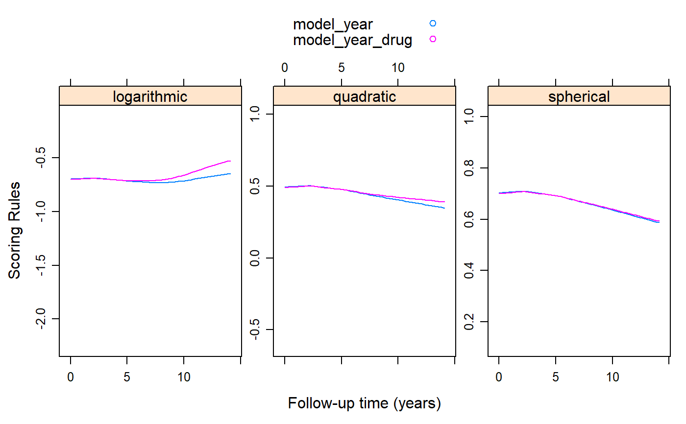

cv_gee.RdCalculates the logarithmic, quadratic/Brier and spherical scoring rules based on generalized estimation equations.
cv_gee(object, rule = c("all", "quadratic", "logarithmic", "spherical"), max_count = 500, K = 5L, M = 10L, seed = 1L, return_data = FALSE)
| object | an object inheriting from class |
|---|---|
| rule | character string indicating the type of scoring rule to be used. |
| max_count | numeric scalar or vector denoting the maximum count up to which to calculate probabilities; this is relevant for count response data. |
| K | numeric scalar indicating the number of folds used in the cross-validation procedure. |
| M | numeric scalar denoting how many times the split of the data in |
| seed | numeric scalre providing the seed used in the procedure. |
| return_data | logical; if |
A list or a data.frame with elements or (extra) columns the values of the logarithmic, quadratic and spherical scoring rules calculated based on the GEE object.
Carvalho, A. (2016). An overview of applications of proper scoring rules. Decision Analysis 13, 223--242. doi:10.1287/deca.2016.0337
Liang, K.Y. and Zeger, S.L. (1986). Longitudinal data analysis using generalized linear models. Biometrika 73, 13--22. doi:10.1093/biomet/73.1.13
library("geepack") library("lattice") pbc2$serBilirD <- as.numeric(pbc2$serBilir > 1.2) fm1 <- geeglm(serBilirD ~ year, family = binomial(), data = pbc2, id = id, corstr = "exchangeable") fm2 <- geeglm(serBilirD ~ year * drug, family = binomial(), data = pbc2, id = id, corstr = "exchangeable") plot_data <- cv_gee(fm1, return_data = TRUE, M = 5) plot_data$model_year <- plot_data$.score plot_data$model_year_drug <- unlist(cv_gee(fm2, M = 5)) xyplot(model_year + model_year_drug ~ year | .rule, data = plot_data, type = "smooth", auto.key = TRUE, layout = c(3, 1), scales = list(y = list(relation = "free")), xlab = "Follow-up time (years)", ylab = "Scoring Rules")